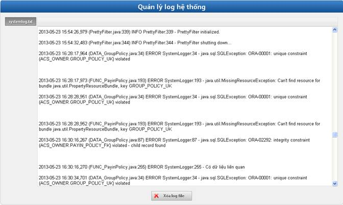

- Mục đích: Cho phép quản lý các log của hệ thống.
- Bước 1: Click Quản lý log hệ thống à Click vào nút ‘Systemlog.txt’ để xem thông tin về log hệ thống.

Hình 22: Màn hình quản lý log hệ thống
- Bước 2: Xóa log hệ thống (không bắt buộc).